Ra1
Colpire ascoltando la pioggia2
oppure
Colpire ascoltando nella pioggia3
Fine [?]4
[Il colpo avviene per]
• Moto rapido e violento per cui un corpo
entra in contatto con un altro;
• Movimento veloce di uno strumento
oppure di un oggetto;
• Caduta.5
1 Codice METAR per indicare la pioggia (dall'inglese rain).
2 L'intento è definire, nell'ascolto, i molteplici fenomeni sonori generati
dalle precipitazioni e, attraverso il colpo, separarsi da essi.
3 L'intento è definire, nell'ascolto, i molteplici fenomeni sonori generati
dalle precipitazioni e, attraverso il colpo, condursi tra essi.
4 RA è un esercizio a durata variabile e deve essere praticato in accordo con le proprie
necessità in relazione alla pioggia; è importante decidere il suo inizio ed essere consapevoli di come
avverrà la sua fine. Il performer abita l'esercizio in funzione di una durata prestabilita: le
possibilità a sua disposizione vanno dall'utilizzo di un'unità temporale fissa, misurata con
un
cronometro, fino a seguire la frequenza con cui il fenomeno pioggia si manifesta: l'assenza di
pioggia diventa quindi una pausa, un'interruzione indefinita dell'esercizio, mentre il ritorno
della pioggia un nuovo invito a all'azione. L'esercizio cerca di favorire lo studio di una
ritmicità non orientata alla definizione di modelli (patterns), ma alla relazione con la distribuzione
di
eventi/fenomeni sonori vasti e instabili.
5 Il performer sceglie liberamente come produrre il colpo e mantiene tale scelta per
tutta
la durata dell'esercizio; ogni colpo è però un accadimento unico, privo di reciprocità con il colpo
ad esso precedente e successivo. Il colpo deve essere presentato con la massima trasparenza nei
confronti
del suono della pioggia.
La Bessa 1

Cammina sulla pietraia. Posiziona un dispositivo di playback che diffonde un suono continuo e lascialo alle tue spalle: avanza lentamente, cercando di tracciare una linea.
Prosegui fino a perdere il riferimento sonoro dato dal dispositivo.
Torna indietro avendo cura di rimanere lungo la linea tracciata.
[Ricomincia a piedi nudi]
1 La Riserva Naturale Speciale della Bessa si trova in Piemonte, vicino alle Alpi Biellesi; consiste in un altopiano caratterizzato da enormi distese di sassi circondate da vegetazione. La specifica conformazione territoriale della Bessa non è dovuta a fenomeni naturali, bensì al fatto che, in epoca romana, migliaia di persone furono impiegate in una miniera d'oro presente nella zona limitrofa, producendo scarti di lavorazione di tale entità da sembrare il risultante di un processo geologico. L'intensità superficiale della pietraia esplicita alcune problematiche basilari dell'indagine sulla percezione ecologica in riferimento alla relazione tra suono, corpo e spazio; nella Bessa, infatti, l'attenzione per il suono deve accompagnarsi a una presenza corporea costante e in continuo rinnovamento. I sassi tendono a muoversi e scivolare sotto il peso dei passi e ogni spostamento comporta l'abbandono della propria zona di comfort. La “mobilità” della Bessa rende, chi la attraversa, direttamente partecipe della sua modificazione ed evoluzione superficiale.
FARE polvere
Lascia una pietra in uno spazio familiare, in una posizione che la renda ben visibile: ogni giorno, per un minuto, ascolta tutti i suoni che ti circondano come se provenissero dalla pietra.
Sposta la pietra quando della polvere si è depositata sulla sua superficie.
1 FARE POLVERE è da svolgersi in un ambiente interno a un edificio che frequenti abitualmente, e con il cui suono senti familiarità e confidenza.
2 La pietra si trasforma nella fonte di tutti i suoni che ti circondano, sia interni,
che
esterni all'edificio; per un tempo limitato, e dichiarato (un minuto), cerca di aprire
completamente
l'ascolto mantenendo però l'attenzione focalizzata su una specifica posizione nello spazio,
occupata, appunto, dal corpo della pietra.
3 La pietra deve fare polvere prima di essere spostata: trovata una nuova posizione, continua la pratica allo stesso modo, rivolgendo l'attenzione alla nuova collocazione della pietra. Il fare polvere suggerisce un lasso temporale largo e indefinito, in cui il corpo della pietra, lasciato immobile, si deposita nelle consuetudini con cui abiti lo spazio scelto per la pratica.
la medusa è un ispessimento dell'acqua
Nello spazio di lavoro, posiziona un altoparlante che diffonde un suono continuo, a un volume adatto alle tue esigenze di ascolto; rivolgiti frontalmente all'emissione sonora, ovvero con il volto alla stessa altezza della membrana dello speaker e trova una posizione comoda, ma consueta. Nello svolgimento dell'esercizio è importante che il corpo non venga condotto in una condizione posturale diversa da quelle che abitualmente assumi nel compiere le tue mansioni o durante il riposo.
Inspira, e lascia entrare il suono emesso dall'altoparlante.
Abita la sensazione di riempimento; cura la pausa respiratoria che segue l'inspirazione e contieni il suono.
Espira, e lascia
uscire il suono emesso dall'altoparlante.
Abita la sensazione di
svuotamento; cura la pausa respiratoria che segue l'espirazione e spargiti nel suono.
Mantieni il ciclo inspirazione-pausa-espirazione-pausa continuo e rilassato e osserva cosa accade al corpo, e al suono, nell'estensione e contrazione data dal respiro. Trovato l'agio necessario affinchè ci sia continuità energetica tra il suono (emesso dall'altoparlante) e il corpo, stabilizza il circuito (tempo, intensità, rumorosità del respiro...) ed entra in una modalità di ascolto immersiva. Porta l'attenzione a ciò che avviene nello spazio attorno a te, e oltre ad esso, e cerca di abitare l'azione di compenetrazione che avviene tra te e l'ambiente. Definisci la vitalità del suono, e del corpo, in relazione al movimento dell'aria, acquisendo la consapevolezza di essere in qualcosa che a sua volta è in te (l'aria). La mutualità tra il respiro e l'ambiente è uno strumento utile a potenziare l'ascolto dei pattern minimi e vasti dell'esperienza sonora e una risorsa continua per ampliare la capacità individuale di progettazione, azione e riposo. L'esercizio prosegue fino a che la sua azione benefica è esaurita.
[crescita]
Attua una transizione verso una modalità di ascolto selettiva: scortica (o frattura) la sensazione di immersione trascurando deliberatamente il sopraggiungere di nuovi stimoli ambientali. Osserva esclusivamente i fenomeni che emergono tra il respiro e il suono di riferimento.
indaga
• Il suono è una variazione di ciò che ha luogo nel respiro.
• Il respiro modella la consistenza del suono e permette di unirsi e separarsi alla sua densità.
• Il respiro modifica la proiezione dinamica del suono
durante
l'inspirazione e l'espirazione, lasciando il corpo, nelle pause respiratorie, vulnerabile
alla
sua intensità dinamica.
[crescita]
Attua una transizione verso una modalità di ascolto selettiva1: frattura la sensazione di immersione trascurando deliberatamente il sopraggiungere di nuovi stimoli ambientali. Osserva esclusivamente i fenomeni che emergono tra il respiro e il suono di riferimento2.
indaga
• Il suono è una variazione di ciò che ha luogo nel respiro.
• Il respiro modella la consistenza del suono e permette di unirsi e separarsi alla sua densità.
• Il respiro modifica la proiezione dinamica del suono
durante
l'inspirazione e l'espirazione, lasciando il corpo, nelle pause respiratorie, vulnerabile
alla
sua intensità dinamica3 .
1 Il passaggio da un ascolto immersivo ad uno selettivo (e viceversa) può avvenire
gradualmente oppure in maniera repentina; è anche possibile che si attivi in modo involontario e in
accordo con la disponibilità del corpo, con la variazione dell'andamento del respiro o da una
particolare relazione tra il suono di riferimento e l'ambiente. Muoversi tra ascolto immersivo e
selettivo (volontariamente o meno) è uno degli obiettivi dell'esercizio.
2 Il
suono
di riferimento è costituito anche dal carattere della tecnologia audio utilizzata, dalla sua eventuale
instabilità e presenza fisica nello spazio.
3 Le tre proposte di indagine riguardano alcune intuizioni emerse durante la pratica
personale dell'esercizio: sono riferimenti di partenza utili e pronti ad essere messi in
discussione
da chiunque si cimenti nell'esercizio.
sinewave_1 indaco
Siedi rivolto a un altoparlante che diffonde un'onda sinusoidale a 433Hz. Ascolta, e conduci il suono nello spazio tra le sopracciglia, fissando l'attenzione nella zona tra la radice del naso e le arcate sopracciliari. Calma il respiro, con fasi distese di inspirazione ed espirazione: dalle narici, osserva il movimento dell'aria mettere in disordine i margini del suono e, allo stesso tempo, rinnovare la sensazione, sempre più centrale, dell'onda sonora.
1 L'hertz (simbolo Hz) è l'unità di misura del sistema internazionale della frequenza. La scelta della frequenza è, ai fini dell'esercizio, completamente arbitraria e basata sulla sensazione personale.
piallassa1
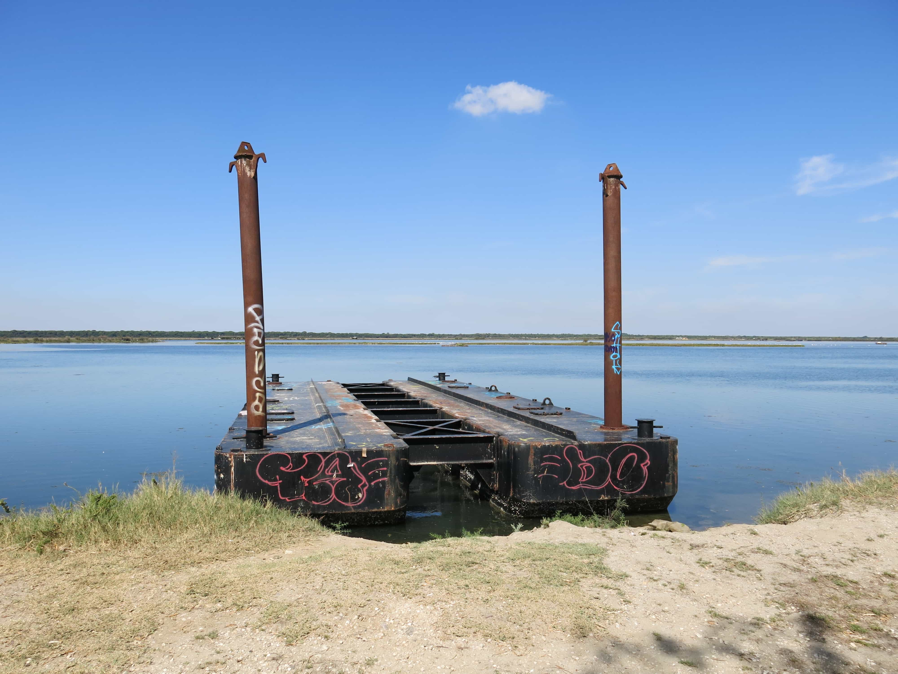
Ascolta la crescita di un singolo suono2.
1 La Piallassa della Baiona è una zona naturale protetta situata nel territorio ravennate. L'area è caratterizzata da un bacino lagunare di acqua salmastra, con limitatissimi apporti di acqua dolce e con vegetazione prevalente a giuncheti palustri e salicornieti. La laguna è formata da una rete di canali distribuiti a spina di pesce che confluiscono, dal fiume Lamone, verso il porto del canale Candiano.
2 La Piallassa consente un ascolto ad alta definizione. Il territorio produce le condizioni ottimali per captare ogni suono come evento definito e spazialmente localizzato; l'ascoltatore è spinto a un continuo movimento dell'attenzione e alla definizione di ogni impulso sonoro in quanto figura su uno sfondo.
Durante un pomeriggio di indagine in loco (6/9/2020) ho rifiutato questa prerogativa aurale della Piallassa: tale opposizione è nata in risposta alla persuasione subita da ogni suono: un nuovo evento, entrando nel mio campo di ascolto, portava all'immediata necessità di riconoscere l'origine di quel suono, definire le sue qualità e seguire il suo percorso separandolo acusticamente dal contesto. Un ulteriore effetto riguardava il mio proprio corpo, che tendeva a orientare la parte frontale verso la posizione del nuovo suono.
Al comfort iniziale in questa precisione acustica, è seguita una mobilità estetizzante dell'attenzione e la sensazione di attuare una modalità di ascolto imposta dal territorio, favorevole alla definizione di un paesaggio sonoro eterogeneo e comprensibile. L'esercizio si è rivolto, per contro, nel fermare il movimento dell'attenzione e il discernimento dei suoni come eventi separati e descrivibili in se stessi; uscendo dal compiacimento hi-fi ed evitando la rappresentazione uditiva del paesaggio, ho ascoltato i suoni della Piallassa come partecipi della vitalità complessiva del territorio; lentamente è emerso un unico, vasto suono, che raggiungeva il mio corpo da ogni direzione.
fiume_1[11-8-2020]
Raccogli una pietra lungo il percorso del fiume e portala con te.
Abbandona la pietra nello spazio in cui svolgerai l'esercizio e lascia che assorba le informazioni che la circondano; è importante che le sensazioni della giornata al fiume, nella quale hai raccolto la pietra, vengano in parte dimenticate, cimentandosi nella pratica fuori dall'eco del contesto originario della pietra1.
Inizia l'esercizio trovando una postura adeguata e distensiva; scegli una zona del tuo corpo e appoggia su di essa la pietra lasciando che eserciti il proprio peso con la maggiore aderenza possibile alla pelle2. Il corpo e la pietra hanno temperature diverse4. Ascolta il disordine generato dal loro contatto, ovvero porta l'attenzione al trasferimento di energia dal corpo più caldo verso quello più freddo. Trascura completamente i suoni che ti circondano e concentrati sulla transizione di calore fino al momento in cui la sensazione di separazione tra la pelle e la superficie della pietra scompare. I corpi raggiungono la stessa temperatura e i suoni dell'ambiente sono mantenuti distanti, resi remoti5.
Rimuovi la pietra consentendo ai suoni dell'ambiente di
riemergere6.
1Per la prima realizzazione dell'esercizio puoi aspettare fino a che della polvere non si sia visibilmente depositata sulla superficie della pietra.
2 Le zone morbide e ampie del corpo aiutano la distribuzione del peso della pietra e
l'ascolto del disordine dato dal contatto, portando il performer a una conduzione più distesa
dell'esercizio.
3 La pietra è tendenzialmente più fredda del corpo umano se posta in uno spazio chiuso; puoi
decidere di lasciarla esposta al sole per ottenere una modificazione sensibile del divenire
dell'esercizio.
4 Trascurare i suoni dell'ambiente implica il tentativo di
concentrarsi solo sulla zona localizzata del corpo in cui avviene il trasferimento di energia; evita
quindi di porre l'attenzione al sopraggiungere di nuovi stimoli esterni: suoni, luci,
odori.
5 Rimossa la pietra inizia una fase in cui la pelle “ripristina” le sue proprie
condizioni; utilizza la sensazione lasciata dalla pietra, il suo decadimento, per riportare attivamente
l'attenzione sugli stimoli ambientali.
R #1 da sinistra verso destra
Siedi al centro di una stanza vuota dopo avere posizionato una fonte di rumore bianco1 alla tua sinistra, vicino al muro; il volume di proiezione del suono deve essere intenso e adatto alle tue esigenze; il tuo corpo è in linea con la posizione dello speaker e l'emissione sonora è rivolta verso di esso; trova una posizione comoda prima di intraprendere la pratica, la cui durata deve essere decisa prima del suo inizio.
Ascolta
• La metà sinistra del corpo è vulnerabile e il rumore esercita una pressione diretta su di
essa; lo spazio che ti separa dal muro di sinistra è riempito di suono; le superfici del corpo si
compattano, assorbono il suono e sostengono la sua presenza.
• La metà destra del corpo è protetta e il rumore non esercita una pressione diretta su di
essa; lo spazio che ti separa dal muro di destra è privo di suono; le superfici del corpo si
dilatano, cercano il suono e colmano la sua assenza.
Definisci le sensazioni che riguardano la metà sinistra e la metà destra del corpo, mantenendo le parti separate, lontane. Trova agio in questa condizione, evita il mescolarsi delle sensazioni e lascia emergere due distinte esperienze di ascolto del rumore bianco: una appartiene alla tua metà sinistra, l'altra appartiene alla tua metà destra.
Avanti così, sino a esaurire il tempo concesso a R #1.
1Il Rumore Bianco è un particolare tipo di rumore caratterizzato dall'assenza di periodicità nel tempo e da ampiezza costante su tutto lo spettro di frequenze.
R #2 vuoto alle spalle
Un rumore ti raggiunge1; fermati, individua la sorgente di quel rumore e rivolgi il tuo corpo verso di essa; se il suono è continuo, concentrati, e lascia che la distanza tra te e l'emissione sonora si riempia della sua energia; l'aria si addensa ed esercita una pressione crescente sul piano frontale del corpo; carne e indumenti assorbono il suono, che pervade ogni tua superficie prima di proseguire il proprio percorso2; rivolgi l'ascolto solamente al davanti del corpo, dove l'aria, disordinata dal rumore, si infrange, dandoti la sensazione di una spinta verso il vuoto alle tue spalle.
1 R #2 vuoto alle spalle è un esercizio da attuare in ambienti sonori complessi e in accordo
con l'incontro imprevisto con un rumore (continuo) che intrappola la tua attenzione, imponendosi
nel
contesto sonoro in cui ti stai muovendo. L'esercizio può essere svolto prima in uno spazio
protetto,
in cui il performer può ascoltare le sensazioni che interessano la parte frontale del corpo in relazione
al rumore continuo, imparando a riconoscere le implicazioni di R #2 alle spalle; servirsi di una fonte
di
rumore bianco.
2 R #2 vuoto alle spalle produce sensazioni diverse in relazione agli
indumenti e alle zone scoperte del corpo; rendersi consapevoli delle modificazioni che subisce
l'ascolto per mezzo dei tessuti che portiamo e, in questo senso, dalle necessità dettate dalle
variazioni climatiche stagionali.
FIUME_2 [7-6-2020]
Il Ponte di ferro è una struttura di servizio e collegamento tra i due
argini del Savio, nei pressi di Cesena; collocato nel Parco Naturale del fiume, si presenta su di un
piano rialzato rispetto al percorso che conduce, lungo una riva, alla Centrale Idroelettrica di Mulino
Cento e, nella riva opposta, al prato umido di Cà Bianchi. La
struttura e la passerella pedonale di griglie in piatto
di ferro, rendono il ponte particolarmente risonante e rispondente alle sollecitazioni, come ad
esempio,
quelle generate dal camminare. L'esercizio sfrutta il ponte per esplorare due modalità di ascolto
dei fenomeni di risonanza prodotti dal peso del corpo e dall'energia che si genera durante il
passaggio da una riva all'altra del fiume.
1] Il performer attraversa ripetutamente il ponte. Ascoltare i suoni generati dai passi modificando l'andamento del cammino, la distribuzione dei pesi e il carico di impatto dei piedi sulla superficie della passerella; mantenersi sempre in contatto con le sensazioni (raccolte e trasmesse) dei piedi, e attivare la risonanza del ponte1.
2] Il performer trova una posizione distante dal ponte. Ascoltare i
suoni generati dal passaggio di altre persone2,
portando l'attenzione alle risonanze della struttura e ad altri fenomeni acustici che da essa si
sprigionano; trascurare completamente l'ambiente, rimanendo concentrati sul ponte,
nell'alternarsi di presenza e assenza di suono3.
1 Sperimentare la parte 1. dell'esercizio anche a piedi nudi.
2 Il
parco del fiume, nei pressi del ponte di ferro, non è particolarmente frequentato: la parte 2.
dell'esercizio prevede la disponibilità a un tempo di ascolto dilatato in cui, probabilmente,
prevale
l'assenza di attraversamenti della passerella e, di conseguenza, di attività
risonante.
3
Per converso, è possibile sperimentare la parte 2. evitando ogni focalizzazione
dell'ascolto; il suono del ponte, dato dal passaggio di una persona, non prevale sul contesto. La
risonanza della struttura avviene assieme a tutti gli altri suoni e si mescola all'ambiente.
DAF
Colpisci il tamburo a cornice1 a mani aperte, iniziando sempre con la parte debole2; continua sino a che la membrana e la pelle della mano trovano una vibrazione (e un calore) comune; ascolta se il suono è di carne, oppure di osso; le unghie sono schegge3
1 Il tamburo a cornice è uno strumento musicale a percussione che consiste di una singola
pelle, montata e tesa su un cerchio di legno o metallo. L'estrema diffusione di questo strumento,
la
moltitudine di forme e manifestazioni socio-culturali alle quali appartiene ha condotto,
nell'ambito
dell'organologia classica, a definire tamburi a cornice, tutti i tamburi mono-pelle la cui
profondità
è minore rispetto al diametro. L'annotazione riguarda una serie di esercizi di base delle
percussioni
emersi e sviluppati durante la mia pratica quotidiana di questi strumenti nei mesi di marzo, aprile e
maggio 2020. Le modalità di ascolto proposte, tuttavia, possono essere indagate anche senza servirsi di
un
tamburo a cornice o di altri membranofoni: è possibile, infatti utilizzare qualsiasi superficie
risonante,
elastica e responsiva (ad esclusione del proprio corpo, e di quello altrui) e dotata di
un'estensione
tale da poter accogliere diverse forme di impulso date dalla mano. Capacità e conoscenze specifiche
nell'ambito degli strumenti a percussione non sono in ogni caso fondamentali ai fini della pratica,
la quale, invita ad ampliare le modalità di osservazione e ascolto. Il titolo indica il nome di un
grande
tamburo a cornice del Medio Oriente utilizzato nell'esecuzione di musica classica e popolare; la
cornice è solitamente realizzata in legno duro e ha inseriti molti anelli metallici che vengono scossi
durante la percussione.
2 Il suono aperto è prodotto solitamente percuotendo il
tamburo
nella parte mediana, tra la cornice e il centro, facendo vibrare la membrana liberamente. Per converso,
il
suono chiuso si ottiene colpendo lo strumento verso la parte centrale, con un impatto secco, spesso dato
con la mano aperta, e che viene lasciata a contatto con la membrana, per non consentirle di entrare in
risonanza; la chiusura del suono si raggiunge anche colpendo il tamburo sul bordo, dove la pelle è
ripiegata sulla cornice di legno. Tecnicamente è importante alternare i colpi iniziando sempre con la
propria mano debole (la parte debole), lentamente, e ascoltando la risonanza di ogni colpo per la sua
intera durata.
3 Nella conduzione dei colpi singoli alternati, indagare ogni suono
come
evento unico e complesso, in cui la relazione tra mano e membrana, e la reciproca eccitazione
superficiale, viene proiettata nel suono che si genera. Discernere quindi, per ogni colpo, le modalità
con
cui l'impatto apre la risonanza in relazione a minime variazioni di intensità e
inclinazione
della mano in riferimento alla membrana; allo stesso tempo, nell'atto di percuotere, accogliere la
risposta che la pelle del tamburo restituisce (e imprime) all'arto battente, lasciando una
sensazione
che agisce talvolta sulla carne, talvolta sulle ossa, e che perdura nel corpo del suonatore: carne e
ossa,
a loro volta, si trasferiscono al tamburo che, nella risonanza, ospita la loro diversa densità. Le
unghie
sono schegge.
volute
Il fumo si alza tra la stanza e la strada1.
Il rumore bianco, trasportato dal fumo, assume le forme del
movimento
dell'aria2; danza all'interno e, un attimo
dopo, si dissolve verso l'esterno; una sola volta, in 21 minuti, raggiunge il mio
volto3.
1 Nell'estate 2021 sono solito bruciare coni di incenso alla mirra nelle soglie (porta, finestre) del mio studio, che è collocato al piano terra di un edificio condominiale e attiguo a una strada pedonale del centro storico di Cesena. Oltre al piacere dato dalla fragranza, sono attratto dal movimento del fumo e dalla tensione che si genera nel momento in cui, allontanandosi dal cono, perde linearità, descrive ampie volute e si disperde nell'aria.
2 In alcune occasioni posiziono un altoparlante in prossimità del cono di incenso e
riproduco
un rumore bianco: l'esercizio consiste nell'immaginare che il suono sia trasportato nel fumo,
perda la sua continuità lineare, e assuma le forme del movimento dell'aria, rese manifeste dal
fumo.
3 Sabato 18 settembre (ore 15:57), dopo un breve temporale, ho acceso un cono di
incenso sul gradino di ingresso dello studio, lasciando porte e finestre aperte: seduto
all'interno,
nella parte più distante alla porta, ho osservato il movimento del fumo spostare le sensazioni date dal
rumore. Nei 21 minuti di attività della brace, una sola volta, un forte impulso d'aria, pieno di
suono e odore, ha raggiunto il mio volto.
RUDIMENTI1
Colpi distesi sul fiore delle pelle2.La risonanza diffonde
il proprio odore3.
1 Il rudimento base degli strumenti a percussione consiste nella successione di colpi
singoli
alternati (a mano o a battente), a velocità e intensità variabile.
2 Il fiore della
pelle è la parte pregiata delle membrane naturali che vengono montate sui tamburi; appartengono al
fiore
gli strati più esterni, le cui uniche irregolarità morfologiche sono date dalla presenza dei bulbi
piliferi, dai pori e dalla linea dorsale. Per ottenere maggiore uniformità superficiale, alcune
percussioni montano pelli di feti di agnello o di capra; esse sono estremamente sottili: i pori sono
ancora chiusi e non essendosi sviluppati gli alveoli dei bulbi piliferi queste membrane sono dotate di
una
liscezza che determina un'immediata reazione agli impulsi e una maggiore velocità vibratoria. Lo
spessore e la liscezza sono qualità fondamentali: alcune forme musicali percussive si sono sviluppate
ed
evolute sulla base della membrana battente presente sul tamburo. In Nord–Africa, Medio Oriente, Asia
Centrale e alcune zone dell'Est Europa esistono tamburi in cui vengono montate pelli di pesce,
sottilissime e altamente rispondenti; traslucida, elastica e oleosa, tale superficie produce
stimolazioni
tattili e visive uniche per il percuotente. In Calabria (Italia Meridionale) e Marche (Italia Centrale)
si
trovano tamburi a cornice con pelle di gatto; spessa e poco risonante tale membrana veniva fissata
capovolta al cerchio per enfatizzare ulteriormente la sua sordità. Il pelo dell'animale era
rivolto
allo spazio della presa (e quindi mai percossa) mentre lo strato più robusto grasso e “ancora
attaccato”
alla carne, nella zona battente del tamburo. La pelle non subiva tiraggio oltre alla cucitura al telaio
e
veniva, prima di ogni utilizzo, ammollata con acqua per mortificare definitivamente ogni potenzialità
risonante; il suono della percussione, in questo caso, si esprime esclusivamente nell'energia di
impatto della mano sulla superficie.
[...]
Nell'alternanza dei colpi è importante mantenere l'impatto della mano negli strati più superficiali del tamburo: il suono emerge per distensione dell'energia in tutto il corpo dello strumento e non per la compressione muscolare di una parte localizzata della membrana; il colpo dischiude la completa vitalità della superficie
La configurazione ritmica a colpi singoli alternati è fondamentale allo studio del tamburo ed è la base su cui vengono prodotte molte figurazioni complesse.
Con Il rullo a colpi singoli si entra in confidenza con la membrana e ad ascoltare la sua capacità rispondente senza reprimerla: le minime variazioni di eccitabilità della superficie informano della complessità dello strumento, ed enfatizzano l'accordo di diversità (o solidarietà) che intercorre tra la mano sinistra e la mano destra nell'atto di percuotere; inizialmente è importante non ricercare controllo, e non fissare la prestazione del tamburo a un presupposto ritmico definito e regolare. L'ascolto è rivolto al suono di ogni colpo e si pratica lo studio dei colpi alternati aspettando la fine di ogni risonanza, prima di procedere al colpo successivo, senza trascurare il legame di alternanza che produce il pattern.
Per tutta la durata dell'esercizio avere cura dell'intensità dei colpi, esplorando, a ogni impatto, sia le variazioni sonore date dal cambiamento di presa del battente (maggiore pressione della mano, posizione delle dita etc), sia le zone del tamburo, cercando di utilizzare le variazioni superficiali (ad esempio la maggiore durezza della pelle in alcune aree) per trasformare la relazione colpo–risonanza e, conseguentemente, temporalità e dinamica del suono.
3 Il riferimento all'odore riguarda un particolare momento in cui, durante una giornata
di pioggia, praticando l'esercizio con una pelle appena montata a ogni colpo corrispondeva una
differente proiezione di odore da parte del tamburo.
la fiamma di una candela1
Accendi una candela in una stanza buia2. La candela non deve
spegnersi per cause diverse del suo stesso consumarsi. Accendi la candela solo dopo aver infilato un
pezzo di metallo a metà del suo cilindro di cera e posizionato, alla sua base, un piattino di
metallo3.
Stenditi a terra, sul dorso, e ascolta tutti i suoni che ti circondano;
non
hai propositi: i suoni riverberano ovunque attorno a te, e così la luce della candela che, a sua
volta,
riverbera ovunque, nella stanza che hai scelto.
La risonanza del piattino, ovvero la caduta del
pezzo di metallo, è per te un segnale: alzati in piedi e continua ad ascoltare tutti i suoni che ti
circondano, senza propositi. Avanti così, restando in piedi, fino a che la candela si spegne.
1 Gaston Bachelard "La fiamma di una candela" ©SE srl, 1996 e 2005
Milano.
2 La candela deve essere lunga almeno 15 cm e a lenta combustione.
3 Il chiodo, cadendo, deve colpire la superficie del piattino e metterla in risonanza. La pratica proposta è emersa dopo una ricerca sulle candele-orologio. un metodo relativamente economico ed efficace consisteva nell'utilizzare una candela con delle taccheo dei segni spaziati (e di solito numerati): bruciando, con il suo consumarsi, il lume indicava il passare del tempo. Con l'inserimento di un chiodo la candela diventava anche una sveglia: bastava inserire il metallo in corrispondenza della tacca desiderata, e il chiodo cadeva sul piatto di metallo alla base, con un clangore che faceva da segnale di allarme. Le candele-orologio venivano prodotte utilizzando una cera con un tempo di scioglimento conosciuto, per garantire la massima precisione.
seconda annotazione sullE candele
In orario diurno, accendi una candela in una stanza esposta a luce
naturale.
Trova una posizione comoda e, facendo ricorso a materiali reperibili nella stanza
[found objects1] produci un suono continuo, utilizzando un atto blando e
sostenibile
per una durata indefinita.
Avanti così, fino a che la fiamma della candela non diventa la più
potente sorgente di luce.
1 L'utilizzo di oggetti trovati per produrre suono è una pratica originaria e
strettamente legata alla musica stessa: l'invenzione degli strumenti musicali e la loro
elaborazione
tecnica si è quasi certamente sviluppata a partire dai suoni di oggetti e materiali reperibili in
natura,
dall'atto di produrre suono con essi e dalle modalità con cui tali suoni venivano ascoltati in
relazione ai suoni dell'ambiente.
camminata estiva
Ascolta il suono di due cicale. Muovendoti lentamente trova una posizione
in
cui il frinire1 di una cicala [C dx] è localizzato alla tua destra, e il frinire
dell'altra [C sx] è localizzato alla tua sinistra. Continua a camminare, senza meta, mantenendo
sempre, e distintamente, il suono di [C dx] alla tua destra e il suono di [C sx] alla tua sinistra.
Avanti così, fino a che una delle due cicale interrompe il suo canto.
1 Frinire: le cicale emettono un suono caratteristico, intenso e dotato di una frequenza e
ritmicità stridente, che viene provocato dalla vibrazione di alcune lamine poste sull'addome
dell'insetto (timballi); tale suono viene poi amplificato da speciali camere d'aria che fanno
riecheggiare lo stridio in tutta l'area circostante.
Maraca1
Scuotere la formica bianca lasciando che punga le superfici seccate al sole2.
1 La Maraca (o crepitacolo) appartiene alla famiglia degli idiofoni, strumenti sonori fatti con materiali naturali e che non abbisognano di tensione addizionale, di corde o di pelli per risuonare. Questi materiali si fanno strumenti durante l'azione del sonatore e il loro suono rende manifesta l'estensione aurale del movimento della mano o del corpo del performer. In ambiti di organologia classica, gli idiofoni si suddividono in base alle varie modalità con cui i materiali vengono indotti alla vibrazione: concussione, percussione, frizione, raschiamento, scuotimento, pizzicamento, storcimento.
2 <<La maraca della quale si serve lo sciamano nei suoi rituali si chiama nyaxsàru, parola derivata da nyaxsà, ovvero formica bianca che punge. Con questa denominazione si allude alla rapidità con la quale si disperdono questi insetti quando si disturba il loro nido; è la stessa rapidità con quale si propaga il rumore della maraca. Quest'ultima è il prolungamento del braccio dello sciamano>>.
Gerardo Reichel-Dolmatoff, “Il cosmo amazzonico” Simbolismo degli indigeni tukano del Vaupés –
Adelphi, Milano 2014, pp.
Senza titolo [magnete in ferrite]
Un magnete in ferrite viene consegnato a ogni performer e serve a discernere la composizione materiale dei Prati di Caprara1. Ilperformer si dirige verso i corpi metallici che incontra nel suo cammino e avvicina loro il magnete, fino a che non avviene il distacco del corpo magnetico dalla mano di presa. La forza di attrazione, che si esercita tra la calamita e le superfici ferromagnetiche sparse nei prati, produce un impatto sonoro non mediato dal contatto diretto e preclude una modalità di ascolto basata sul tatto.
ascolta:
• la risonanza della superficie colpita dal magnete.
• la risonanza tattile: la mano viene abbandonata dal magnete, ma trattiene i residui
della sua presenza, nel calore e nella polvere.
• la resistenza del magnete al suo recupero dalla superficie metallica.
Avanti così, un impatto dopo l'altro, per 45 minuti
1 Con il toponimo Prati di Caprara si definisce una ex area militare di Bologna collocata in prossimità del centro storico, fuori Porta San Felice. L'area si sviluppa tra la via Emilia Ponente, in prossimità dell'Ospedale Maggiore, il torrente Ravone e la canaletta Ghisiliera.
aurelio urbano
istruzioni per una performance sonora eventuale
[luogo]
Prati di Caprara2
[preparazione]
Il performer attacca un magnete in ferrite a un suo indumento, ai lacci delle scarpe oppure a un found object e cammina, lasciando che il corpo magnetico si trascini a terra. Avanti così, almeno per 15 minuti.
[azione]
Il performer, rivolto a un pubblico eventuale, compie un'aziona sonora improvvisata,
servendosi dei materiali rimasti attaccati al suo magnete.
[fine]
1Aurelio Urbano, detto Minghôn (1907 – 2003) visse tra Sammauro in Valle e Borgo di Ronta, frazioni di Cesena. Mezzadro in gioventù e poi, in età adulta, piccolo proprietario terriero di un fondo coltivato ad alberi da frutto: peschi, meli, peri. Uomo di poche parole e con capacità manuali che, dal lavoro agricolo, entrava con facilità nel merito delle mansioni domestiche. Forbici, ago e filo gli utensili preferiti: sarto occasionale per amore dei tessuti, conservò per decenni una camicia, rammendata che ancora portava i pantaloni corti.
In una mattina di fine estate, Minghôn decise di indossare un completo semplice, fresco: pantaloni kaki con le pinces e cintura di corda naturale, camicia bianca di cotone (con bretelle di elastico in cuoio), scarpa di rete marrone con tomaia intrecciata; in testa un borsalino bianco con fascia nera. Dopo alcune faccende e un pasto frugale uscì percorrendo a piedi il viale di casa fino al fosso di confine, per poi tagliare tra i campi e raggiungere il bar; il quotidiano incontro con gli amici del Borgo: un bicîr ad bêi e l'inevitabile Maraffone. Seduto a un tavolino esterno del circolo parrocchiale, durante la partita a carte, notò la mancanza delle impalcature nel cantiere adiacente la chiesa: i ponteggi smontati, il materiale da costruzione e gli attrezzi rimossi, in tutta probabilità la sera prima. Chiusa l'ultima mano al gioco salutò sbrigativo, prendendo la via del ritorno tra i mugugni degli astanti, in cerca di rivincita. Una volta a casa, prese dal capanno un secchio e un bastone, buttato tra gli attrezzi: un ramo di noce nodoso incastrato, a un'estremità, a un grosso magnete annerito e sporco, intriso di grasso meccanico; si incamminò subito, senza cambiarsi d'abito, a passo spedito lungo la strada bianca, abbagliante. Alla vista del campanile ricordò la Messa di Riuscita, che sarebbe stata detta nel pomeriggio per il vecchio Fafîn e, accompagnato dal suono dimesso della campana a lutto, raggiunse il cantiere. Minghôn, come tanti altri (forse tutti nel Borgo) approfittò della nota consuetudine dei muratori, ovvero di non raccogliere i componenti minuti alla chiusura del cantiere: si lasciano cadere, si disperdono, mischiandosi al terreno.
Con il manico del secchio all'avambraccio sinistro, iniziò lentamente a camminare, con il bastone tenuto saldo, radente terra. Il magnete, colpito da ogni direzione da chiodi ritorti, viti e frammenti di ferro, produsse inizialmente una risonanza argentina che scomparve rapidamente, fino a diventare un tintinnio appuntito, quasi impercettibile, nell'accumulo crescente e difforme di materiale ferromagnetico. La camminata rese, in poco meno di un'ora, 1kg abbondante di ferro, che si aggiunse a varie raccolte precedenti. Il suono della campana annunciò il servizio di suffragio. Preso da un lieve turbamento si raccolse in una breve preghiera per clà péla ad tambûr ad Fafîn prima di incamminarsi verso casa, per la seconda volta in quel giorno. Ormai ai margini del cantiere incontrò una lieve resistenza e un improvviso strappo fermò il suo passo: il lembo sinistro del pantalone rimase intricato a una spranga in ferro e il tondo nervato, nascosto tra gli erbaglioni, si prese un brandello di tessuto kaki. Poco male, qualcosa con cui tenersi occupati dopo cena, pensò. A casa, tra il frinire di qualche cicala oltre il tramonto e con indosso i vestiti da lavoro, iniziò a mischiare il ferro ad altro ferro, e ad altro ancora, riposto nel capanno ai margini del campo incolto; un odore pungente, polveroso, si sparse nell'aria, assieme al colore della ruggine. L'indomani prese il tutto, ammucchiato a badilate su di una carriola, e lo spinse al primo fêrvech. La resa fu di qualche lira: in bottega, acquistò dei pezzetti di carne e qualche osso grasso, per il brodo domenicale.
2 Con il toponimo Prati di Caprara si definisce una ex area militare di Bologna collocata in prossimità del centro storico, fuori Porta San Felice. L'area si sviluppa tra la via Emilia Ponente, in prossimità dell'Ospedale Maggiore, il torrente Ravone e la canaletta Ghisiliera.
ambra
Macchia Mediterranea alta. Tu cammini, in ascolto: al battimani amico, segnale tenue tra la vegetazione, tu cadi a terra e subito ti risollevi, senza diffondere alcun suono. Avanti così, spostandosi nel verde, con battiti di mani non frequenti, rare cadute e parole lette ad alta voce, fino a sera.
brano:
<<In fondo alla gola stretta, il ruscello era coperto di alberi d'ambra
(Liquidambar orientalis), le foglie così dentellate e grigie come la loro corteccia.
Bastava
battere
le mani perché cadessero. Cadevano per risollevarsi in nugoli, rosse lucenti, punteggiate di nero,
rigate di bianco.
Le farfalle (Callimorpha quadripuctaria) giungevano nella valle per assorbire
umidità in quella frescura e potersi accoppiare. Anche se, dopo il lungo volo, in gran parte esauste
morivano>>.
Raoul Schrott , "Il deserto di Lop" La Grande Illusion, Pavia 2022,
pp.106
1 La pratica si svolge con un compagno o una compagna; una persona di cui ti fidi, con la quale è piacevole passare del tempo assieme. Richiede un intero pomeriggio, alternando momenti leggeri, con scambi di parole e letture, a momenti di calma silenziosa e concentrazione pura.
Resa di unA risonanza
Il performer scuote una campana dotata di batacchio con la mano sinistra; la risonanza dello strumento deve essere continua, senza variazioni rilevanti di andamento e intensità sonora. Appena il batacchio scampana deciso il performer, servendosi della mano destra, avvicina alla campana dei magneti in ferrite, lasciando che si attacchino, uno dopo l'altro alla superficie dello strumento.
[Ascolta]
A ogni impatto magnetico, il suono della campana si modifica, in
accordo alla riduzione della sua superficie capace di vibrare liberamente ai colpi dati dal
batacchio.
Avanti così, attaccando magneti fino a che tutta la
campana ne è ricoperta e la sua risonanza si arrende.
[Ripetere, invertendo le mani]
1 L'esercizio deve essere preparato in modo che il performer non abbia impedimento alcuno durante la pratica: il peso del campanaccio deve essere adatto al corpo del performer, i magneti in ferrite in comoda presa e lo spazio di azione ampio, capace di garantire l'ascolto delle minime variazioni risonanti dello strumento. L'attacco dei magneti deve avvenire lento: l'azione deve avere una durata minima di 30 minuti.
gran sasso1
Le campane delle bestie si scuotono, sparse nel fianco roccioso; ne esce un suono terso, senza peso e di forme concordi allo spostamento di tutti quei corpi flemmatici e affamati, che seguono il verde, sui sedimenti di marna e dolomia. Il sistema di risonanza metallica, ad altezza costante, rende presente la grande assenza; nel suono delle campane, si trascina il silenzio del massiccio, che sferza l'orecchio e le narici con l'odore di un'estate in declino.
1 Il Gran Sasso d'Italia è il massiccio montuosopiù alto degliAppenninie dell'Italia peninsulare, situato interamente inAbruzzo, nella dorsale più orientale dell'Appennino abruzzese, al confine fra le province diL'Aquila,TeramoePescara.
KOR1
Dopo alcuni giorni di pratica al tamburo, con colpi battenti a intensità tale da riempire di suono tutta lo spazio della chiesa, alzo lo sguardo e noto che una rete di protezione in corda intrecciata è posta a diversi metri di altezza, sopra la mia testa, e che vi sono adagiati nove cocci di intonaco ocra, staccatisi dall'abside: la rete, rigonfia del loro peso, ne trattiene la caduta, avvenuta in occasioni sconosciute.
Raffiguro nel pensiero un diverso accadimento: la rete assente, la caduta di quei cocci ocra, uno a uno, contro la sottostante tribuna teatrale, i suoni di impatto e, infine, le storture ritmiche che tali colpi avrebbero creato nel mio rullo a colpi singoli alternati.
Destra Sinistra Destra Sinistra Destra Sinistra.
1 Spazio Kor è un ente culturale che opera ad Asti, in Piemonte. Lo spazio del nostro progetto è la chiesa sconsacrata di San Giuseppe di Asti, architettura barocca restaurata dal Comune di Asti e convertita in un affascinante teatro.
OROPA1
Oropa: in cammino.
Risalendo il corso di avanzamento del torrente si propone, lungo
il sentiero, un'apertura: un giardino selvatico, ombroso e raffrescato dall'umidezza di una gradinata
di
macigni. Riparo, cibo. Solitudine: con il viso volto alla riva, ascolto l'acqua che si muove vicina,
in
uno sciabordio continuo che scava fuori il rosa delle rocce: resto fermo e il rumore raggiunge,
vaporizzato e fresco, l'orecchio destro e abbandona l'orecchio sinistro con un'agitazione
spinosa2. Il torrente è la sua direzione. Io sono due metà di corpo. Conduco l'ascolto ai
margini più estremi del suono, a destra e a sinistra, come a scomporre il mio corpo per
lanciarlo
dove il suono è un accumulo di onde (dentro onde), un accumulo bianco di energia. Ricompongo le due
metà, lasciando convergere le attenzioni verso il centro, posandole su ciò che avviene avanti a me:
suoni minuti di rivoli, e altri rivoli che si frangono dentro di essi, ramoscelli anneriti e
prigionieri, che si decorticano a vicenda, colpendosi ritmicamente tra i sassi, gocce prevedibili, ma
impazzite.
Il solco torrentizio, nella riva opposta, si eleva repentino in una muraglia terrosa, forata di radici, e dalla cui sommità ricade un verde vegetale che delimita il campo visivo. Sorpasso la parete di terra con l'udito ed emerge un suono remoto, il rintocco metallico di un campanaccio da bestia; alla singola risonanza iniziale si aggiungono, a poco a poco, altri suoni, tutti simili a campane, sparsi e a volte simultanei, con lontananze diverse e in lento movimento di mandria. Ormai convinto della presenza di animali oltre l'ostacolo naturale, bramo una conferma visiva. Rompo la posizione fissa del mio corpo e, con essa, la tensione stereofonica3 dei suoni dell'acqua: guado il torrente e oltrepasso, con una certa fatica e aiutandomi con le mani, la ripida parete di terra odorosa per raggiungere, infine, una pianura di silenzio pneumatico in cui nulla, ne bestie ne altro vivente, calpestano la distesa erbosa4.
1 L'Oropa è un torrente del Piemonte, affluente in
destra orografica delCervo, fiume che attraversa le province di Biella e
Vercelli.
2 Il torrente genera vari livelli di suono continuo, simile a rumore
bianco–rosa.
3 Lastereofonia è unatecnica di registrazione e riproduzione del suonoche prevede due flussi
informativi sonori, ognuno dei quali destinato a essere riprodotto da un diversodiffusore
acusticoposizionato nell'ambiente d'ascolto, diversamente rispetto
all'altro,
secondo regole prestabilite. Si basa sull'attitudine dell'udito umano a distinguere la
provenienza dei suoni. La stereofonia si contrappone allamonofoniache prevede invece un unico
flusso informativo sonoro.
4 Durante la trascrizione di questa annotazione, che
documenta un'esperienza avvenuta tra il 17 e il 21 luglio 2017 nei pressi di Biella, ho
involontariamente ascoltato una lecture di Alan Watts in cui descrive brevemente il concetto
giapponese diYūgen: <<The Japanese has a word: Yūgen,
which has no English equivalent whatsoever. Yūgen is in a way digging change; it describes
poetically…You have the feeling of Yūgen when you see out in the distant water some ships hidden
behind
a far off island…You have the feeling of Yūgen when you watch wild geese suddenly see and than
lost in
the clouds; you have the feeling of Yūgen when you look across Mount Tamalpais and you have
never been
to the other side and you see the sky beyond: you don't go over there to look and see
what's on
the
other side, that wouldn't be Yūgen, you let the other side be the other side. It evokes
something in
your imagination but you don't attempt to define it, to pin it down. So in the same way, the
coming
and
going of things in the world is marvelous. They go! Where do they go? Don't answer because that
would
spoil the mystery. Let them vanish into the mystery>>.
KODERJANA
Dopo un diluvio, entra nella vecchia scuola di Topolò1. Spalanca le due finestre, poste a destra dell'ingresso; non spostare nulla e siediti al centro, sul legno polveroso, rivolto alla porta. Chiudi gli occhi. Calma l'ascolto e permetti al rumore [bianco] del Koderjana di risalire la valle e sfociare nella stanza dalle due aperture. Respira. Rendi il suono del fiume sempre più presente nello spazio attorno a te: lascia che cresca, che riempia, fino a sentire il muro [bianco] posto alla tua destra, e opposto alle due finestre, riverberare la sua energia acustica.
[infine, ancora a occhi
chiusi]
Raffigura nel pensiero il muro [bianco] posto alla tua destra: il rumore del Koderjana si
infiltra in ogni sua crepa e squarcio, e lo oltrepassa; si infrange contro il muro a secco e vibra
l'intera collina.
1 Topolò è una frazione del comune di Grimacco, in Friuli-Venezia Giulia. Il Koderjàna è un affluente del Kòzca; nasce dal Kolòurat e si riversa nel Kòzca a Hlòdič. L'annotazione è stata presa durante un seminario di ascolto tenuto presso la vecchia scuola di Topolò, durante la Stazione di Topolò / Postaja Topolove, nel luglio 2015.
RISPOSTA BATTENTE
Risposta Battente è un esercizio performativo rivolto a una coppia di performer.
Vagando per il Villaggio Artigiano di Modena Ovest, senza parlare, i due
compagni trovano ed entrano in un vasto fabbricato abbandonato1.
Ricerca
Il
primo performer indaga l'acustica del luogo battendo le mani, in cerca di aree in cui i fenomeni di
eco e risonanza sono abbondanti e diversificati.
Il secondo performer cerca una superficie dura e sottile, che possa tenere tra le mani e portare davanti al volto, coprendolo interamente alla vista del primo performer.
Preparazione
I performer pongono i propri corpi allineati e alla massima distanza possibile.
Realizzazione
Il primo performer cammina a un'andatura costante e batte le mani a ogni passo, dirigendosi verso il compagno.
Il secondo performer resta fermo e frappone la superficie trovata tra il proprio volto e il compagno, distendendo gradualmente le braccia (senza modifiche in altezza) a ogni battimani.
Conclusione
Avanti così,
in ascolto assoluto, fino a che il primo performer, battendo le mani,
sfiora con le dita la superficie trovata dal secondo performer2.
1 Risposta battente è parte della ricerca svolta nel Villaggio Artigiano di
Modena Ovest all'interno del progetto Manicula.
2 Note alla realizzazione di Risposta battente:
Abbandonare completamente le parole, sin dall'inizio del camminata al Villaggio
Artigiano.
Il movimento in avanti del primo performer e la
distensione delle braccia del secondo performer devono avvenire in assoluta reciprocità, facendo in
modo che
all'ultimo battimani corrisponda il raggiungimento della massima distensione delle braccia.
Primo performer: ascoltare la risposta acustica dello spazio circostante – echi e riverberi – e come la superficie trovata riflette l'energia del proprio battimani durante l'avvicinamento.
Secondo performer: ascoltare le sensazioni che la superficie trasmette alle mani di presa rispondendo agli impulsi del battimani.
CONO DI PERCUSSIONE1
Ripetizione per 7 performer, in
una giornata di tarda estate, in uno spazio di azione vuoto e silenzioso, privo di luce
artificiale.
Mano sinistra: pirite massiva
Mano
destra: ciottolo di selce2
Spazio di azione: vuoto e silenzioso, privo di luce
artificiale.
La pratica inizia senza alcuna preparazione e al sopraggiungere di luce crepuscolare.
I performer colpiscono ripetutamente la pirite massiva con il
ciottolo
di selce, in cerca di un impatto pieno e vibrante, capace di eccitare i riverberi – e gli echi – dello
spazio di azione.
La forza
battente impressa dal movimento del braccio, la pressione di
presa delle mani sulle pietre, la durezza della pelle e la temperatura (del corpo e
dell'ambiente)
modificano la risposta sonora data dalla percussione e l'emersione dei fenomeni acustici. I
performer,
in ascolto e avendo cura di queste componenti dell'esecuzione del colpo, modellano gli urti per
raggiungere la massima risposta acustica – di pietre e spazio – con il minore consumo possibile
di
risorse vitali, evitando il dolore alle mani e le ferite da schegge.
I performer continuano la percussione delle pietre fino a che il buio li avvolge completamente e le eventuali scintille scaturite dagli impatti diventano le più potenti fonti luminose.
1 Un cono di percussione, o cono d'urto, o cono in frantumi, è una
struttura
rocciosa con fratture a forma di cono divergenti che si trovano solo nei crateri di impatti di
meteoritioesplosioni nucleari.
2 La pirite massiva e la selce sono pietre focaie
ovvero particolari tipi di pietre adoperate per produrre scintille, necessarie ad accendere l'esca per
il fuoco.
VERDE DECIDUO
Una pianta caducifoglie si frappone tra il tuo corpo e un altoparlante che diffonde un rumore rosa1. Trova una posizione comoda, rilassati e con il viso rivolto allo speaker, concentrati sull'emissione sonora: ascolta il percorso del rumore e il suo raggiungerti dopo l'incontro/scontro con la pianta: rami, tronco, foglie.
L'esercizio è ciclico e si ripete per 4 volte nel corso di un anno, mantenendo le condizioni di distanza tra la pianta, il tuo corpo e l'altoparlante, così come il volume di emissione del rumore bianco, costanti.
La prima sessione si svolge in primavera.
La seconda sessione si svolge in tarda
estate.
La terza sessione si svolge in autunno.
La quarta e ultima sessione si svolge in pieno inverno.
1 La pianta, il tuo corpo e l'altoparlante sono equidistanti e posti lungo
uno stesso tracciato territoriale in cui nulla si staglia oltre l'altezza del tuo ginocchio.
Scegli
un sito protetto, in cui il potenziale di disturbo è ridotto al minimo e in cui sei certo di poter
tornare per le quattro sessioni della pratica. Se ritieni necessaria una maggiore comodità puoi
trovare
una seduta o un giaciglio, ma abbi cura che il tuo volto sia alla stessa altezza
dell'altoparlante.
Ogni sessione deve durare almeno 45 minuti.
IDIOfoni
Superficie risonante, con pelle tesa, di animale.
[parte di testo illeggibile molti] frammenti di osso e metallo, legni battenti – di odore e fibra diversa – polvere, cenere, pietrisco di fiume sparso.
Cadono le mani per:
afferrare, malmenare, pungere, storcere, lasciare, raschiare, strappare, percuotere, pestare, scuotere, pizzicare, sfregare, roteare.
1 Idiofoni:
 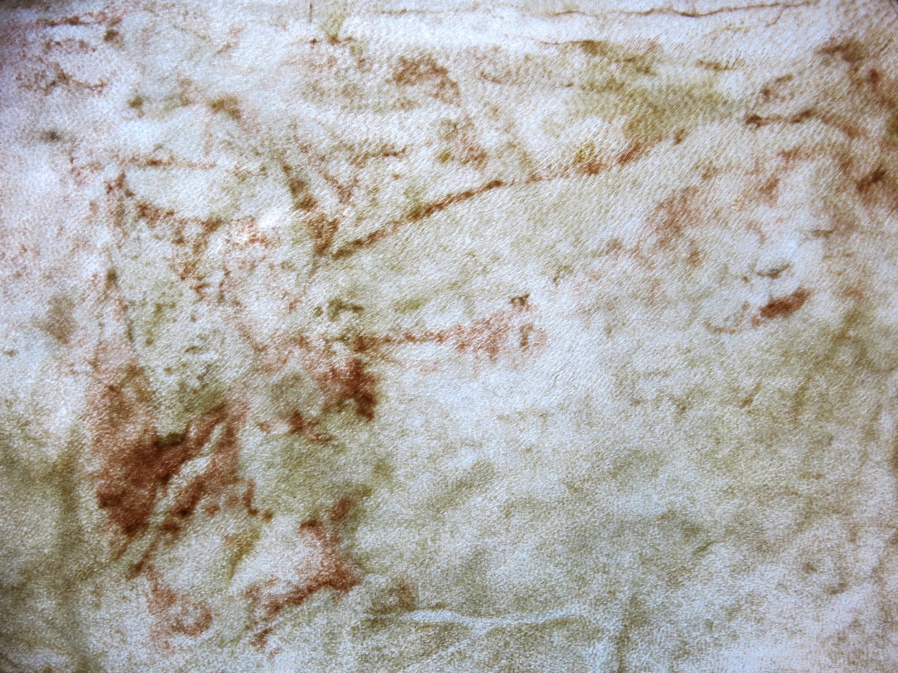
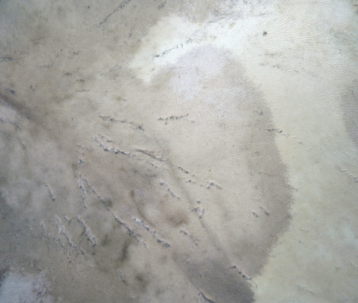
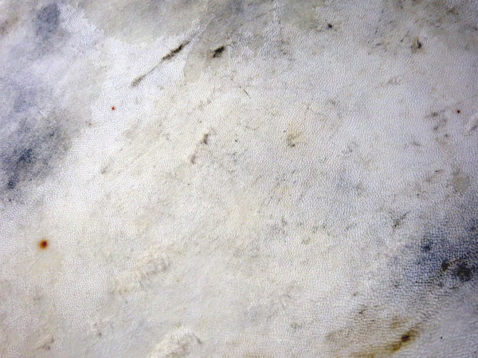
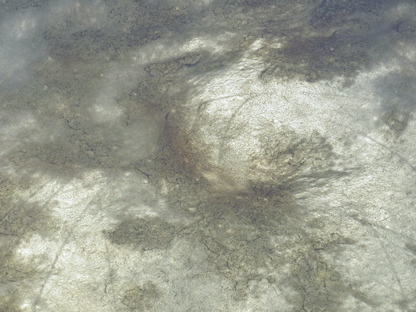
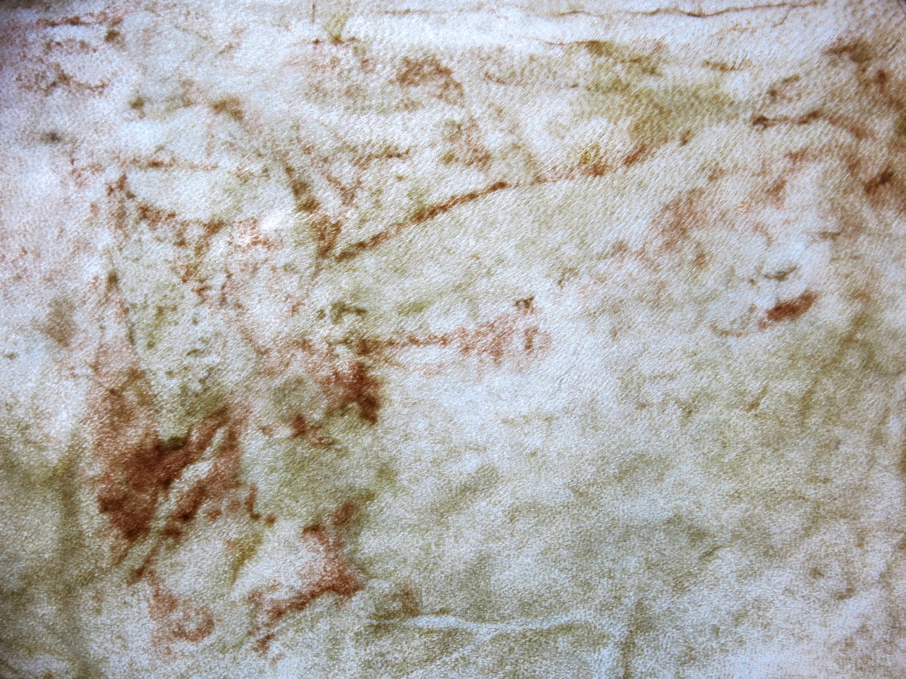
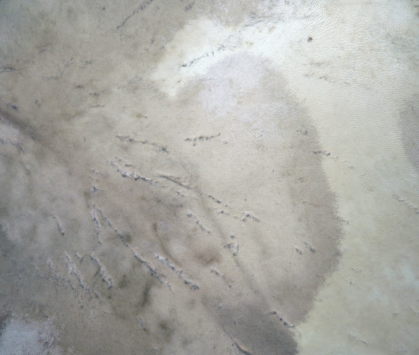
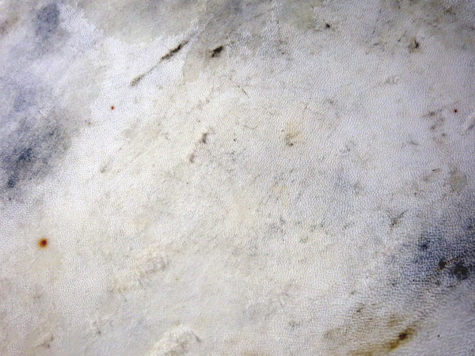
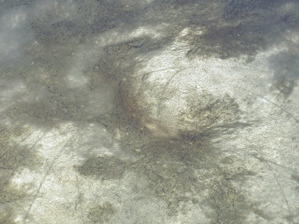
 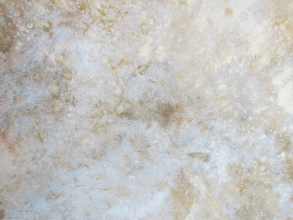
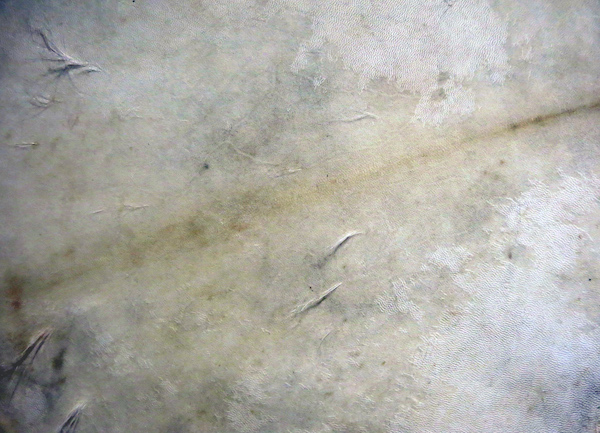
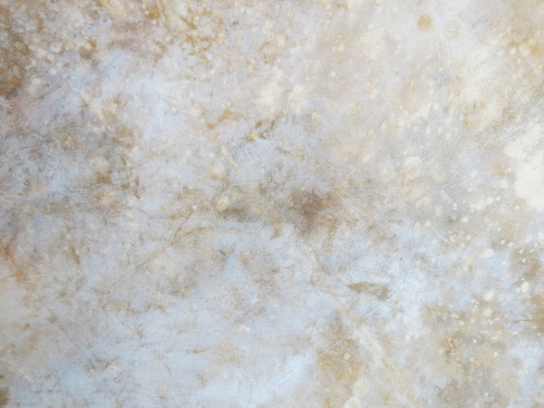
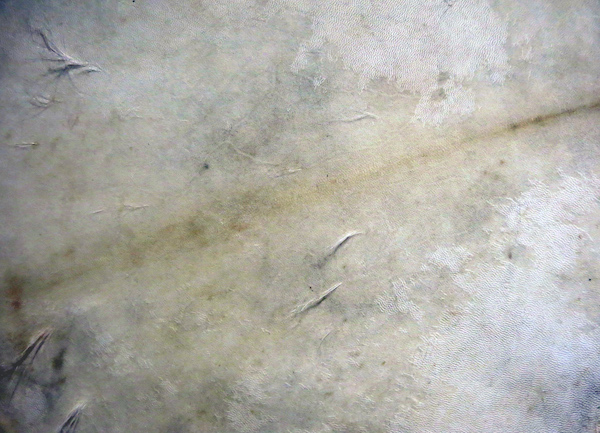
 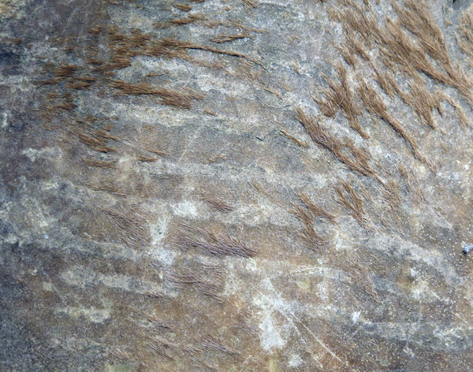
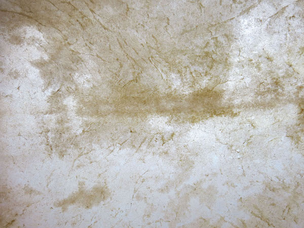
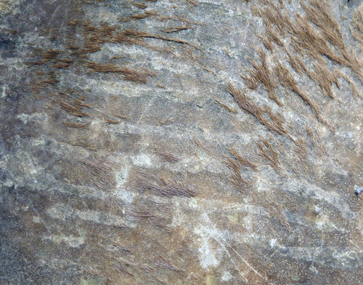
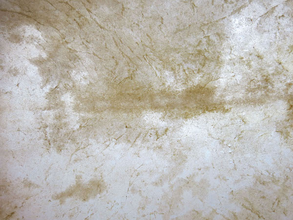
 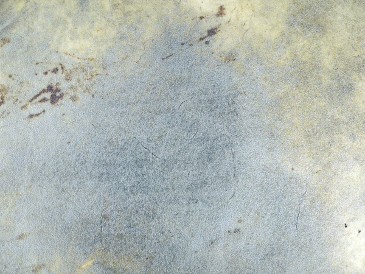
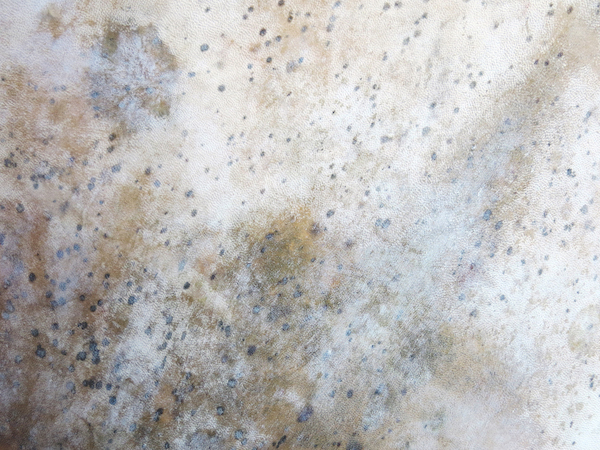
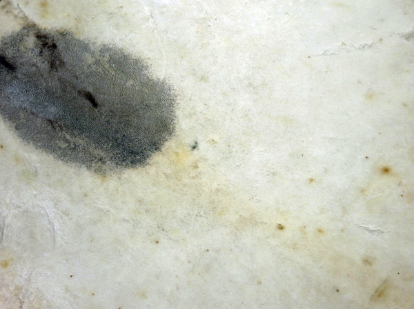
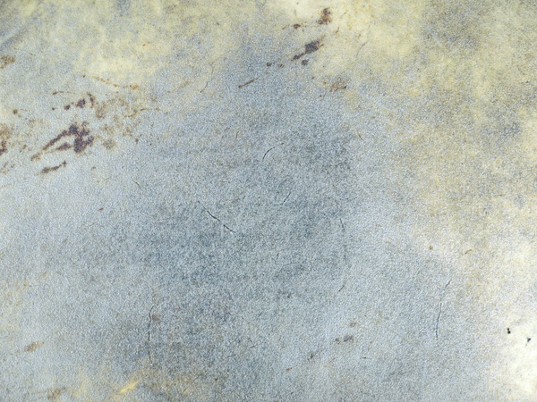
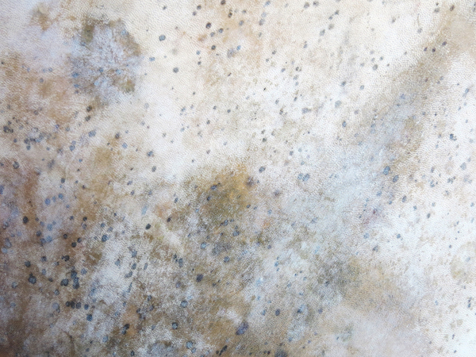
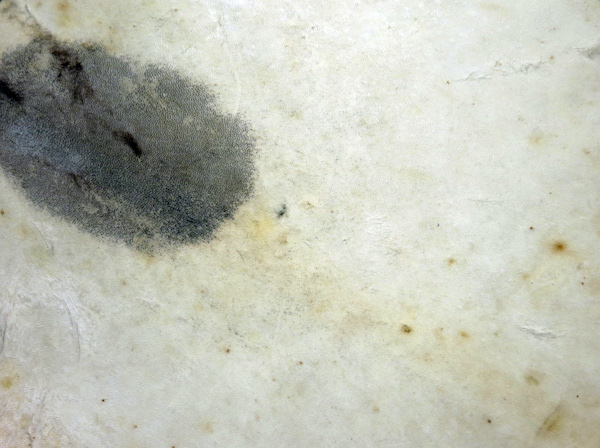
 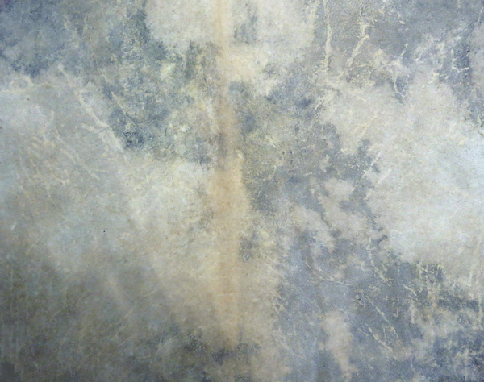
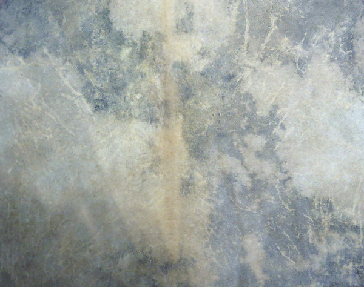